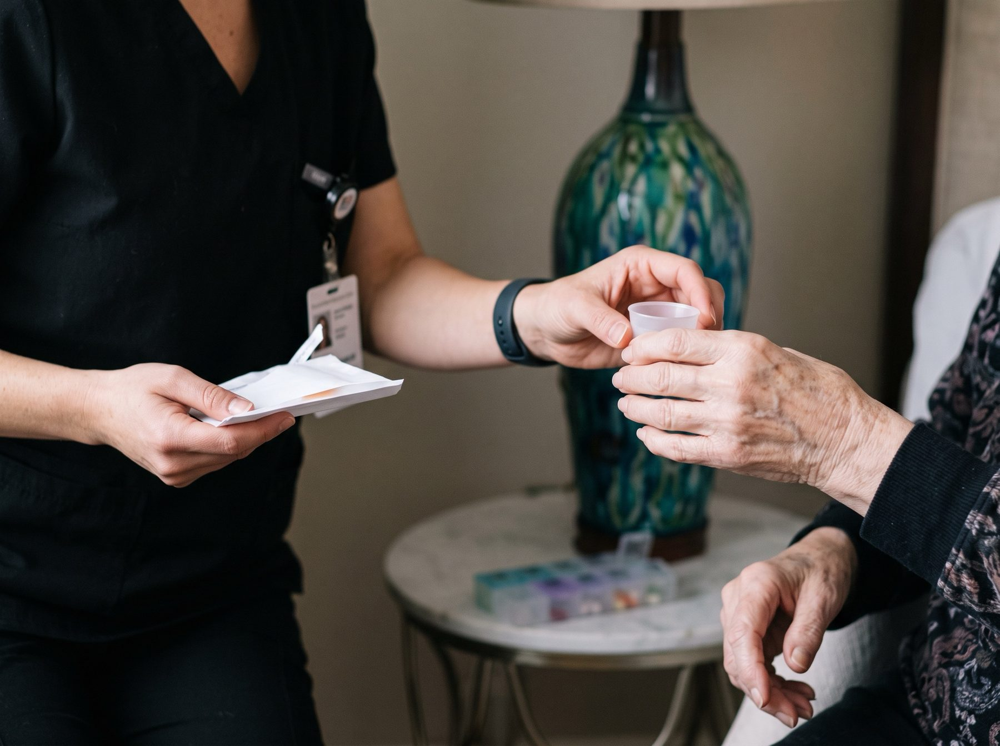

Home health and community-based support services designed to promote health, independence, safety, and quality of life, at home and in the community.

Skilled nursing · Non-skilled home care · CCC Plus service facilitation · Care coordination · Care management · Fall prevention
Skilled Nursing Services
Clinical care from licensed nurses, delivered in your home. Skilled nursing is for people who need assessment, treatment, monitoring, or teaching that only a nurse can provide, often after a hospital stay, a surgery, or a change in a chronic condition.
Skilled nursing assessments and evaluations
Chronic disease management and education
Medication management and education
Post-hospitalization and post-surgical care
Wound care and dressing changes
Disease-specific patient and caregiver education
Monitoring of vital signs and health status
Care coordination and communication with healthcare providers
Patient and caregiver education on preventing complications
Everyday support that keeps life at home safe, comfortable, and dignified. Our caregivers help with personal care and daily routines while encouraging independence wherever possible.
Assistance with activities of daily living (ADLs)
Personal hygiene and grooming assistance
Bathing, dressing, and toileting assistance
Mobility and transfer assistance
Meal preparation and feeding assistance, as authorized
Light housekeeping related to the individual's care
Companionship and safety supervision
Assistance with daily routines and maintaining independence
Discovery Health LLC provides Service Facilitation for Consumer-Directed Services under Virginia Medicaid's Commonwealth Coordinated Care Plus (CCC Plus) Waiver, subject to applicable DMAS enrollment and program requirements. Consumer direction lets eligible participants, or their Employer of Record, hire and manage their own personal care attendants. A service facilitator helps make that model work.
Initial assessment of the individual's needs and circumstances
Assistance with developing the consumer-directed service plan
Helping individuals understand their rights and responsibilities
Explaining the roles of the Employer of Record (EOR), attendant, and service facilitator
Assisting with recruiting, selecting, and hiring personal care attendants
Providing guidance on attendant orientation and training requirements
Assisting with employer-related paperwork and documentation
Monitoring implementation of the approved service plan
Conducting required follow-up visits and reassessments
Monitoring the quality and appropriateness of services
Maintaining service facilitation records and required documentation
Communicating with the individual, family or representative, support coordinator, and other members of the care team
Providing ongoing guidance to help ensure compliance with applicable Medicaid and DMAS requirements
Please note: Services Facilitation is available to eligible CCC Plus consumer-directed participants, subject to current Virginia DMAS requirements and program availability. Eligibility, authorization, and enrollment are determined by DMAS and the participant's managed care organization.
Good care depends on everyone having the same information. We keep your physicians, pharmacists, support coordinator, and family connected, and we take the time to explain what is happening and why.
Coordination with physicians and other healthcare professionals
Patient and family health education
Support with understanding discharge instructions
Chronic illness self-management education
Fall prevention and home safety education
Guidance on accessing appropriate community resources
Behind every visit is a plan, a record, and a team watching for change. Care management is how we make sure services stay appropriate, safe, and coordinated over time.
Individualized care planning
Monitoring of patient needs and changes in condition
Documentation and maintenance of care records
Coordination of services to support continuity of care
Education on infection prevention and health maintenance
The days after a hospital or rehabilitation stay are when people are most at risk of a setback or a fall. We bring nursing, home care, and education together into one focused plan for getting home safely and staying there.
Hospital-to-home transition planning and support
Review of discharge instructions and follow-up appointments
Medication review and reconciliation after a hospital or rehab stay
Home safety and fall-risk assessment
Mobility, transfer, and stair safety support
Fall prevention and home safety education for individuals and caregivers
Monitoring for warning signs that need a call to the physician
Coordination with physicians, pharmacies, and other providers during recovery